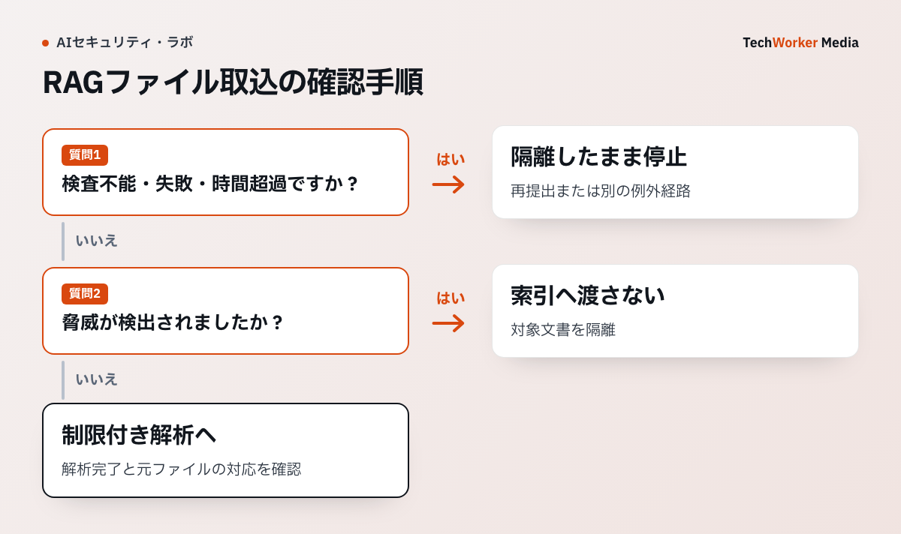

社内文書をAIの検索対象にする仕組みでは、アップロード直後にPDFや画像の解析が始まることがあります。ファイルに問題があると、検索に使う前の解析処理が攻撃されるおそれがあります。OWASPの指針を基に、受領から検索登録までの検査順序を確認します。
一次資料：OWASPのアップロードファイルの保管指針（確認：2026年10月6日）
Store the files on a different server.
出典：OWASP File Upload Cheat Sheet。この一文は、アップロードされたファイルを別のサーバーに置く対策です。保存場所の分離に加え、形式や容量、マルウェアの検査を組み合わせます。

OWASPはアップロードを複数の検査で囲む
OWASPは、拡張子、Content-Type、ファイル署名、ファイル名、容量、保存領域、マルウェア検査を重ねます。どれか1つを通ったファイルを安全とみなしません。
RAGでは、アップロード直後に文字抽出を始める構成が危険です。解析器そのものが攻撃面になるためです。
受領から索引登録までを5状態に分ける
ファイルをreceived（受領済み）、scanning（検査中）、clean（脅威未検知）、parsing（解析中）、indexed（索引登録済み）で管理します。検査不能、時間切れ、暗号化ファイルはcleanへ進めません。
受領領域はウェブ公開領域外に置き、実行権限を与えません。検査結果はファイルのハッシュ値と検査エンジンの版に結び、同じファイルの再アップロードでも判断を追えるようにします。
マルウェアなしでも解析器のリスクは残る
マルウェア検査が陰性でも、巨大PDF、深いZIP、壊れたOfficeファイルでCPUやメモリを使い切ることがあります。展開容量、ページ数、処理時間、入れ子回数に上限を置きます。
OCRと解析器は通信なしの隔離処理で動かし、出力を文字列と付随情報へ限定します。マクロや埋込み物を実行しません。
後日検知したファイルを索引から取り除けるようにする
マルウェア定義更新で過去ファイルが検知される場合があります。元ファイルIDから分割片、ベクトル、検索キャッシュを逆引きし、索引から削除できる関係を持たせます。
削除後は、同じファイルのハッシュ値が再投入されないことと、回答キャッシュに内容が残っていないことを確認します。